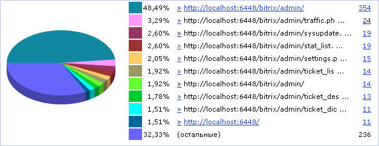
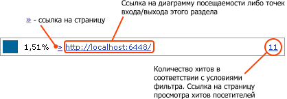
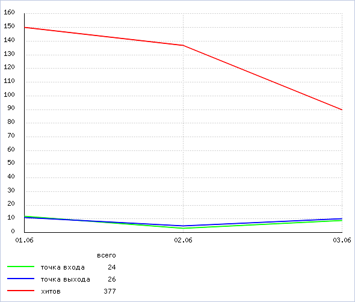

В этом разделе
В зависимости от того, какой пункт выбран в меню функций, эта форма может показывать:
- диаграммы и отчёты посещаемости разделов и страниц сайта;
- диаграммы и отчёты точек входа на сайт и точек выхода.
Фильтр
| Параметр | Описание |
|---|---|
| Период | Период времени, за который следует отобразить диаграмму. |
| Страница / раздел* | Выражение, которое позволит отфильтровать показываемые разделы и файлы в диаграмме. Дополнительно можно указать:
|
| Что показать | Сущности, включаемые в диаграмму - только разделы сайта, только страницы сайта, либо все. |
| Тип данных для рекламной кампании | Тип данных для включения в отчет:
|
| Показать все условия | Отражает все поля фильтра. |
| Скрыть все условия | Скрывает все поля фильтра, кроме полей по умолчанию. |
* - для данных полей Вы можете воспользоваться специальными логическими выражениями.
Чтобы установить фильтр по заданным критериям поиска, нажмите на кнопку Найти. Для отображения всех данных нажмите на кнопку Отменить.
Контекстная панель
| Кнопка | Описание |
|---|---|
| Настроить | Позволяет перейти к диалогу настройки внешнего вида отчетной формы. |
| Excel | Экспортирует данные из отображаемой таблицы (не график) в формат MS Excel. |
Диаграмма
Диаграмма выводится в виде объемной круговой диаграммы, справа от которой расположена легенда:

Для каждого сегмента диаграммы легенда показывает:
- для отчета посещаемости - долю страницы или раздела в общем объеме просмотренных страниц. Для отчета по точкам входа/выхода - как часто та или иная страница/раздел были использованы в качестве точек входа или выхода;
- ссылку (»), ведущую на соответствующую страницу или раздел;
- ссылку на просмотр диаграммы посещаемости страницы/раздела, либо точек входа/выхода относительно этого раздела. Ссылка выполнена в виде (сокращенного) пути к странице/разделу;
- количество хитов в соответствии с условиями фильтра.
На следующем рисунке приведен пример легенды сегмента диаграммы.
Отчет о посещаемости разделов и страниц, точках входа и выхода
В зависимости от того, выбран для просмотра отчет Разделы и страницы или Точки входа (выхода), эта таблица показывает соответственно количество хитов или сессий выбранных страниц/разделов.
| Меню действий | ID | Раздел/страница | Хитов/Сессий | Процент |
|---|---|---|---|---|
| [2] | [3] | [4] | [5] | |
| Выбрано: [6] | ||||
- Кнопка, при нажатии на которую открывается контекстное меню, содержащее следующие команды:
- График посещаемости данной страницы/раздела - открывает (в отдельном окне) страницу с соответствующим графиком (см. ниже).
- Статистика переходов по ссылкам с данной страницы/раздела - просмотр отчета о переходах по ссылкам только с этой страницы.
- Порядковый номер записи.
- Ссылка или путь к странице/разделу.
- Количество уникальных хостов (для отчёта Разделы и страницы) или сессий (для отчёта Точки входа (выхода) за выбранный период.
- Процент посещений/переходов по данному пути.
Примечание: В таблице отчета ссылкой показаны путь к разделу, а путь к странице ссылкой не показывается. Страница - это единичный элемент сайта. Раздел - это папка сайта, в которой содержатся страницы и подпапки.
Рассмотрим небольшой пример. Пусть в таблице отчета содержатся следующие данные:
site.ru/news/ 100 хитов /показан со ссылкой site.ru/news/ 80 хитов /без ссылки, учитывается страница index.php site.ru/news/main.php 5 хитов site.ru/news/local.php 15 хитов
Таким образом, сумма хитов страниц – это число хитов раздела.
Пример графика хитов одного раздела сайта
Окно с таким графиком открывается при выборе пункта График посещаемости данной страницы/раздела в меню действий  требуемой страницы или раздела.
требуемой страницы или раздела.

| © «Битрикс», 2001-2008, «1C-Битрикс», 2008 | 1С-Битрикс: Управление сайтом |